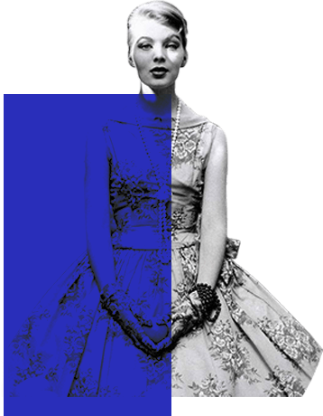
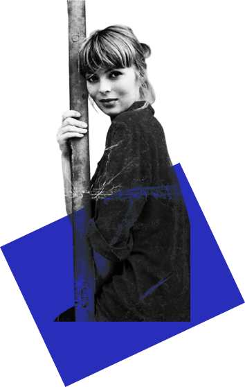

Ze werd geboren in 1938, in het door de nazis geregeerde Duitsland. In 1960 werd ze een van de bekende Warhol superstars en zong ze vocals voor het debut album van the Velvet Undeground en haar werk als solo artieste. Ze acteerde ook in enkele films zoals Federico Fellini’s La Dolce Vita (1960) en Andy Warhol’s Chelsea Girls (1966).
Ze werd geboren in 1938, in het door de nazis geregeerde Duitsland. In 1960 werd ze een van de bekende Warhol superstars en zong ze vocals voor het debut album van the Velvet Undeground en haar werk als solo artieste. Ze acteerde ook in enkele films zoals Federico Fellini’s La Dolce Vita (1960) en Andy Warhol’s Chelsea Girls (1966).


Nico's modellencarrière
The Velvet Underground
Het was de Amerikaanse pop artist Andy Warhol die voor de actrice een andere rol in gedachten had: die van levend kunstwerk, wandelend totaalconcept, dysfunctionele godin oftewel de superstar. In boutades sprak Warhol zijn gevoel van verveling voor de kunstwereld uit en zijn verlangen om een rockband op te richten. Nico werd in eerste instantie neergepoot met een tamboerijn, als decoratief element naast de gedrogeerde Lou Reed en het wonderkind uit Wales, John Cale. Nico voelde zich mateloos aangetrokken door de factory waar Warhol bizarre persoonlijkheden, fotomodellen met een habit, en drag queens met sterallures verzamelde om te schitteren in zijn anti-cinema met lange takes en soms slaapverwekkende anekdotiek.
Hij choqueerde het publiek met eindeloze close-ups van vrijende, etende of slapende mensen en lichtte een tipje van de sluier van het leven in het Chelsea Hotel, een destijds gemarginaliseerd opvangtehuis voor rocksterren, omgeven door mythes en criminaliteit. Toen zong ze vocale voor The Velvet Underground. The Velvet Underground was een experimentele rockgroep uit New York die actief was van 1964 tot 1973. Hoewel de groep destijds geen noemenswaardig commercieel succes boekte, geldt The Velvet Underground tegenwoordig als een van de meest vooruitstrevende en invloedrijkste rockgroepen aller tijden. Het album waar ze voor zong was het debetalbum: The Velvet Underground & Nico.
Nico werd er tot haar grote genoegen geëxploiteerd, maar ontdekte er ook haar eigen creatieve vermogen. In samenwerking met John Cale die het potentieel van haar unieke stem bijschaafde, kwam het standbeeld tot leven en begon ze te werken aan haar eerste solo-album: Chelsea girl . Ze nam liedjes op samen met Cale and Reed en ook met een of andere 16 jarige Jackson Browne die haar ook gezelschap hield tijdens shows. Voor een lange tijd werd niets van haar gehoord, ze spendeerde het grootste deel van haar tijd in Parijs. In het begin van 1974 tekende ze haar contract bij Island. Ze kwam tevoorschijn in een speciaal concert in Londen in het Rainbow Theatre, samen met Kevin Ayers, Cale en Brian Enso. dit resulteerde in een album genoemd naar de datum van het gebeuren: June 1st, 1974. Het jaar hierna had ze vaak discussies in de studie waardoor haar platenlabel haar uiteindelijk in 1975 liet gaan.
tot verslaafde zwerfster”
De jaren daarop werd Nico meer aangezogen door het Europese kunstcircuit. Ze ruilde haar Amerikaanse tonge-in-cheek sfeer in voor Europese ernst en diepgang, dit aan de zijde van Franse cineast Philippe Garrel. Hij gaf haar een plaats in hermetische filmgedichten. Hoewel ze eerst vooral muziekaal meewerkte aan The Falconer uit zijn film Le Lit de la Vierge stortte ze zich terug op acteren voor La Cicatrice Intérieure. De soundtrack van de film bevatte heel wat tracks van haar derde album: Desertshore. Dit moet wel het hoogtepunt geweest zijn van haar solo carrière.
Terwijl ze zich op volgende albums stortte zowel op muzikaal vlak als op vlak van stem zwol de mythe rond haar figuur aan. Dit kwam vooral door haar relaties met muzikanten en kunstenaars, haar heroïneverslaving, haar imposante uiterlijk en onvoorspelbaarheid op het podium.
Ze maakte amper contact met het publiek tijdens live shows en ze leek af te dalen in een psychotische diepte. Op de eerste rijen van haar concerten bevonden zich de fans die opgemaakt waren net als haar in de hoop de looks van de zangeres te kunnen imiteren. Haar laatste album, Camera Obscura, weerspiegeld de veelzijdigheid van haar imago: tribale percussie werd gecombineerd met eighties synth-arrangementen.
De jaren hierna leefde Nico als een zwerver, ze ging van land naar land en spendeerde de laatste jaren van haar leven in Manchester (Engeland). Op 18 juli 1988, op vakantie op Ibiza samen met haar zoon Ari had ze een hartaanval tijdens haar fietstocht waar ze viel en haar hoofd hard stootte. Ze werd bewusteloos gevonden door een taxi bestuurder die haar naar het ziekenhuis bracht. Volgens de eerste diagnose was ze te lang bloot gesteld aan de warmte. Na de röntgenfoto’s kwam uiteindelijk aan het licht dat ze gestorven is door een hevige hersenbloeding.
"In the late morning of July 17, 1988, my mother told me she needed to go downtown to buy marijuana. She sat down in front of the mirror and wrapped a black scarf around her head. My mother stared at the mirror and took great care to wrap the scarf appropriately. Down the hill on her bike: "I'll be back soon." She left in the early afternoon on the hottest day of the year."
– Ari Boulogne